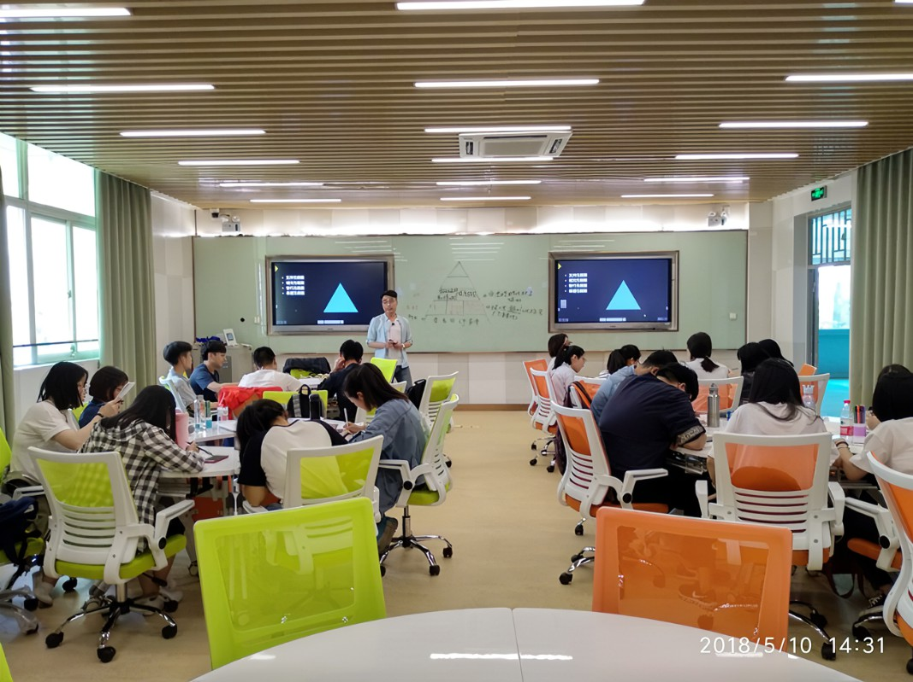
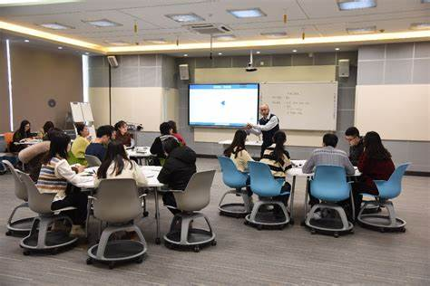

Student Projects
Design and Implementation of Enterprise Cybersecurity Fortification Solutions
Student Name: Li Na Project Overview: Guided by the Cybersecurity Certification Training Resource Pack, Li Na designed and implemented a comprehensive cybersecurity fortification solution for an enterprise. She first conducted an in-depth analysis of the enterprise's network architecture, identifying potential security vulnerabilities and threats. Then, utilizing her cybersecurity knowledge and skills, she formulated a series of targeted defensive measures, including strengthening password policies, deploying firewalls and intrusion detection systems, and conducting regular security audits. Ultimately, the solution successfully enhanced the enterprise's cybersecurity defense capabilities, earning high praise from the enterprise.
Cross-Departmental Collaboration Project Management and Optimization
Student Name: Zhang Qiang Project Overview: With the help of the Project Management and Leadership Development Resource Pack, Zhang Qiang was responsible for managing and optimizing a cross-departmental collaboration project. He formulated a detailed project plan, clarifying the responsibilities and tasks of each department, and effectively coordinated the workflow between departments. At the same time, using his leadership knowledge, he inspired team members' enthusiasm and creativity, improving project execution efficiency and quality. Ultimately, the project successfully achieved its predetermined goals, creating significant economic benefits for the enterprise.
Market Research and Marketing Strategy Formulation for a Startup
Student Name: Wang Li Project Overview: Guided by the Business Management Practice Resource Pack, Wang Li conducted market research and formulated a marketing strategy for a startup. She collected and analyzed market data, understanding the needs and competitive landscape of the target market. Then, combining the enterprise's actual situation, she developed a practical marketing strategy, including product positioning, pricing strategies, promotional activities, etc. Ultimately, the strategy successfully helped the enterprise open up the market, increasing brand awareness and sales. 
Development of an Online Education Platform Based on Java
Student Name: Zhao Lei Project Overview: With the help of the Software Development and Programming Skills Resource Pack, Zhao Lei developed an online education platform based on Java. He learned and mastered the Java programming language and related frameworks, designing and implementing platform functions such as user registration, course browsing, online learning, and exam evaluation. At the same time, he optimized the platform's performance and enhanced its security, ensuring its stability and security. Ultimately, the platform was successfully launched and received recognition and praise from users.